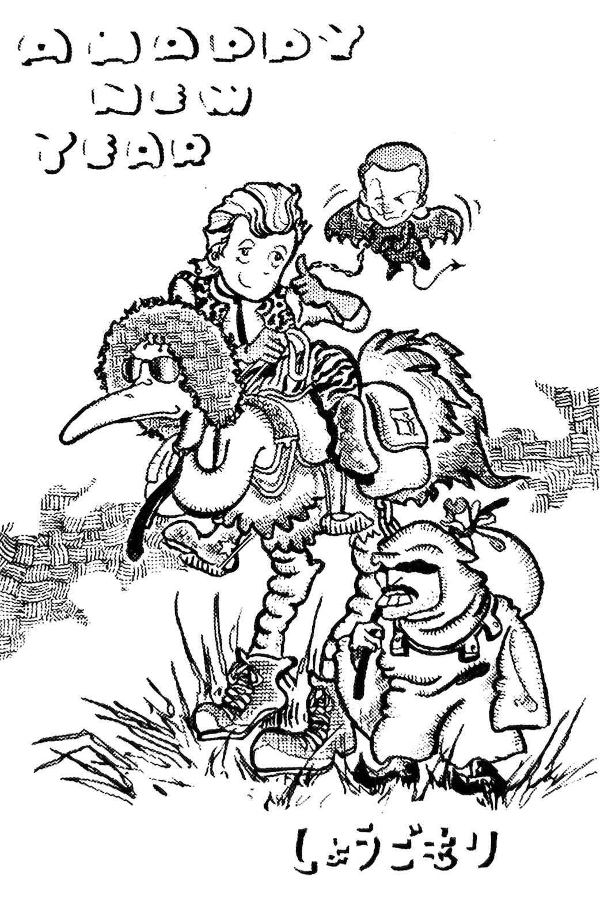

Vol. 21 — February 1982
Vol. 21 contains a "QUEEN BEST 10" reader's poll, pictures of the English fanclub offices, and an excerpt of some of the conversations had at the fanclub gathering mentioned in vol. 20 with Kaoruko Togo and others. This volume also sees the introduction of a section called "My Collection, My Queen" where fans send in info about their rare Queen records and memorabilia. It's interesting to see what was considered rare, even in 1982.
I'm offering up for purchase a copy of Queen II that, unlike the Japanese, UK, and USA copies, has a non-opening jacket for ¥4600. I also have a French version of Sheer Heart Attack with an opening jacket for ¥5600, and a rare Dutch 12" LP single of Under Pressure for ¥3600.
Greatest Flix gets a mention, which is a great example of how times were changing—for years, the only way fans could see Queen music videos was at so-called "film concerts" or to be lucky enough to catch them on a music TV program. The release of Greatest Flix meant that for the low low price of about ¥16,000 they'd now be able to watch them in the comfort of their own home, if they had a VCR.
Exploring Queen's Appeal — Excerpts from the Fan Gatherings
My Collection, My Queen